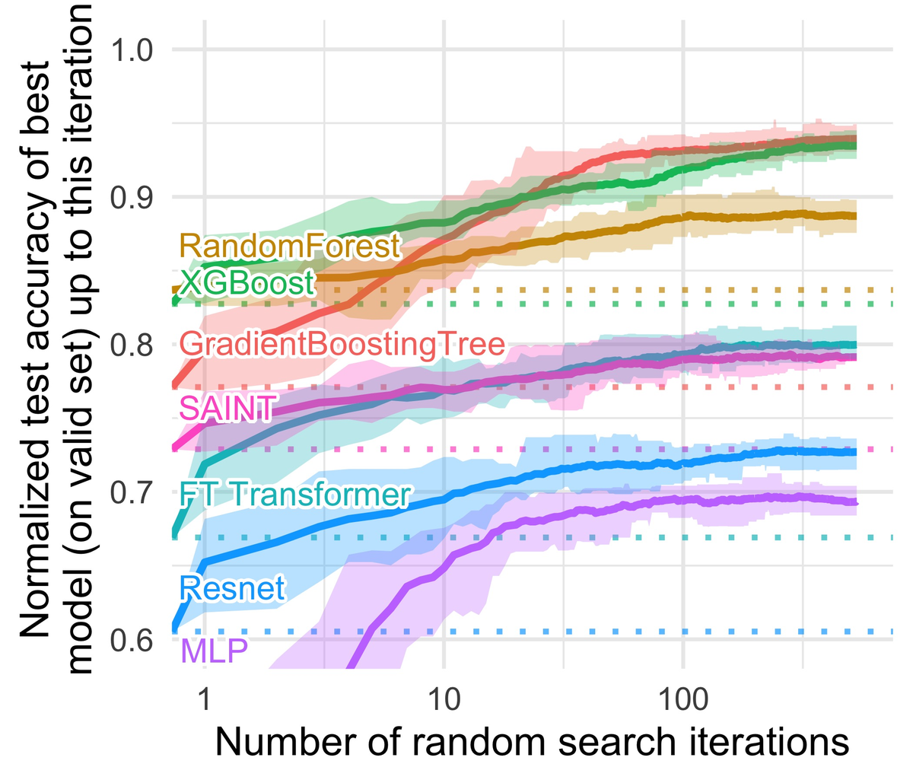

¿Cómo aprende un sistema lo que antes escribía un experto, y cómo sabemos si sirve?
Volvamos a la Sesión 1
El conocimiento vivía en la cabeza de dos técnicos
El sistema experto de MantenIA, escrito a mano
R1SI vibración = alta Y ruido = metálico ENTONCES falla_mecánica
R2SI falla_mecánica Y temp_rodamiento > 80 °C ENTONCES rodamiento_desgastado
R3SI rodamiento_desgastado ENTONCES cambiar_rodamiento, prioridad = alta
R4SI falla_mecánica Y desalineación_visible ENTONCES desalineación
El problema
Uno de los dos técnicos senior se jubila. Escribir sus reglas es lento, caro, y siempre falta alguna.
La alternativa
Aprender de los casos que ya se resolvieron. PANDA, el detector de cáncer de páncreas de la Sesión 1, aprendió de 3208 pacientes, sin reglas explícitas.
El agente que aprende
Un agente que mejora con la experiencia
Lo que cambia es la retroalimentación:
supervisado casos con la respuesta correcta
no supervisado casos sin respuesta: buscar estructura
por refuerzo recompensas por lo que hace
Diagrama propio, a partir de Russell y Norvig (2021), AIMA, 4.ª ed., cap. 2 (el agente que aprende) y cap. 19.
Árboles de decisión · el ejemplo de Quinlan (1986)
Un árbol es una cadena de preguntas
#
pronóstico
temperatura
humedad
viento
¿juega?
1
soleado
caliente
alta
no
no
2
soleado
caliente
alta
sí
no
3
nublado
caliente
alta
no
sí
4
lluvioso
templado
alta
no
sí
5
lluvioso
fresco
normal
no
sí
6
lluvioso
fresco
normal
sí
no
7
nublado
fresco
normal
sí
sí
8
soleado
templado
alta
no
no
9
soleado
fresco
normal
no
sí
10
lluvioso
templado
normal
no
sí
11
soleado
templado
normal
sí
sí
12
nublado
templado
alta
sí
sí
13
nublado
caliente
normal
no
sí
14
lluvioso
templado
alta
sí
no
14 sábados en la mañana: ¿se juega? Quinlan (1986), tabla 1, traducida.
Árboles de decisión · cómo se elige cada pregunta
Primero, la pregunta que mejor separa
Ganancia de información de cada pregunta, en la raíz
Breiman, Friedman, Olshen y Stone, estadísticos: árboles de clasificación y de regresión, con la impureza de Gini y la poda.
ID3 · 1986
Quinlan, desde la IA: inducción a partir de ejemplos, con la ganancia de información. Le siguió C4.5 (1993).
La meta de Quinlan: adquirir conocimiento de los ejemplos, sin entrevistar al experto.
Un caso clásico · el del Laboratorio 6A
El Titanic: ¿quién sobrevivió?
F. G. O. Stuart (1912), el Titanic zarpa de Southampton el 10 de abril de 1912. Wikimedia Commons, dominio público.
1309 pasajeros; sobrevivieron 500, el 38 %.
De cada uno: la clase, el sexo, la edad, la familia a bordo, la tarifa y el puerto.
Se excluyen el nombre, el boleto y la cabina. También el bote y el cuerpo: revelan la respuesta.
El árbol del Titanic · profundidad 3
El árbol redescubre «mujeres y niños primero»
Regla del experto, «mujeres y niños primero»: acierta el 78,2 %.
El árbol, en datos que no vio: el 81,3 %. Encontró matices: la clase y la tarifa.
Generado con ejemplos/arboles_6a.py (scikit-learn). Datos titanic3, cortesía del Departamento de Bioestadística de la Universidad Vanderbilt (hbiostat.org/data). Aciertos con validación cruzada de 5 partes.
Inducción de reglas · el puente con los sistemas expertos
Cada camino del árbol es una regla
SI mujer Y 1.ª o 2.ª clase ENTONCESsobrevive233 de 250
SI hombre Y edad ≤ 9,5 Y ≤ 2 hermanos ENTONCESsobrevive24 de 27
SI hombre Y edad > 9,5 ENTONCESno sobrevive664 de 800
SI mujer Y 3.ª clase Y tarifa > 23,4 £ ENTONCESno sobrevive30 de 33
Lo que gana el árbol
Aprende de miles de casos, se actualiza con datos nuevos y encuentra matices que nadie escribió.
Lo que gana el experto
Sabe el porqué, y cubre lo que los datos no muestran: el caso raro que nunca ocurrió.
Mushroom (UCI): con una sola pregunta, el olor, una regla clasifica bien el 98,52 % de los 8 124 hongos.
George Chernilevsky (2013), Macrolepiota procera, Wikimedia Commons, dominio público.
Sobreajuste · el mismo problema de la Sesión 5
Un árbol sin límite memoriza
Se controla limitando la profundidad, exigiendo un mínimo de casos por hoja, o podando el árbol después.
Ensambles
Muchos árboles votan
Bosque aleatorio (Breiman, 2001): cada árbol aprende de una muestra distinta y votan. Boosting (Friedman, 2001): cada árbol nuevo corrige los errores de los anteriores.
Titanic
Aciertos
Variación entre partes
Un árbol de profundidad 3
81,3 %
± 1,7
Bosque aleatorio, 300 árboles
81,1 %
± 3,1
Boosting por gradiente
80,3 %
± 3,9

En el Titanic no ganan. En datos de tabla medianos, unas 10 000 filas, los ensambles de árboles superan a las redes profundas.
Grinsztajn, Oyallon y Varoquaux (2022), NeurIPS, fig. 1. Cita con fines educativos.
El árbol de profundidad 3 en el Titanic: cinco medidas, no una. Su dispersión dice cuánto confiar en el promedio.
Detalle: la fórmula
Consulta
Validación cruzada
La validación cruzada de k partes
Acierto estimado con k partes D1, …, Dk
h−i es el modelo entrenado con todas las partes menos Di.
Con k = 5 en el Titanic: 82,4; 80,2; 82,1; 83,2 y 78,5 %, con promedio 81,3 %.
Kohavi (1995) comparó estimadores y recomendó la validación cruzada estratificada de 10 partes para elegir modelos: estratificada quiere decir que cada parte conserva la proporción de cada clase.
Si los datos tienen orden en el tiempo, las partes deben respetarlo: no se entrena con el futuro para predecir el pasado.
Evaluar bien · el costo del error
Acertar más no es perder menos
German Credit: costo de cada decisión
real ↓ · decisión →
aprobar
rechazar
buen pagador
0
1
mal pagador
5
0
Matriz de costos de la documentación del conjunto. Hofmann (1994), Statlog (German Credit Data), UCI, CC BY 4.0. Datos anónimos.
En MantenIA: una falla no detectada para la planta; una falsa alarma cuesta una revisión.
Detalle: el costo esperado y el umbral
Consulta
El costo del error
El costo esperado y el umbral que lo minimiza
Costo esperado de rechazar y de aprobar, si p es la probabilidad de ser mal pagador
Se rechaza cuando rechazar cuesta menos, es decir, desde
: costo de rechazar a un buen pagador (1). : costo de aprobar a un mal pagador (5).
Es el resultado de Elkan (2001) para el aprendizaje sensible al costo: no hace falta reentrenar el modelo; basta con mover el umbral, si sus probabilidades son confiables.
Con el bosque del ejemplo: con 0,5, 191 malos pagadores aprobados y 43 buenos rechazados (costo 998); con 1/6, 21 y 457 (costo 562).
Interpretabilidad
La pregunta del auditor, otra vez
«¿Por qué el modelo dijo que este pasajero no sobrevivía?»
Porque es hombre, mayor de 9,5 años y viajaba en 2.ª o 3.ª clase: de 624 pasajeros así, sobrevivieron 78.
El camino del árbol es la explicación: no hay que reconstruirla.
Rudin (2019)
En decisiones de alto impacto, como el crédito o la salud, conviene usar modelos interpretables en lugar de explicar después cajas negras: la explicación de una caja negra puede no ser fiel a lo que el modelo hace.
A continuación · 60 min
Laboratorio 6A · Del dato al conocimiento
Inducir un árbol con los pasajeros del Titanic, leer sus reglas y compararlas con la del experto, con un ensamble y con las que escribe un LLM; después, decidir con costos en el German Credit.
Cambiar
la profundidad del árbol y el umbral de decisión
Evaluar
con validación cruzada y con el costo del error
Sin escribir código
notebook de configuración, en parejas
Referencias de la charla inicial
Para profundizar
Russell, S. y Norvig, P. (2021). Artificial Intelligence: A Modern Approach, 4.ª ed., cap. 2 y 19. Pearson. aima.cs.berkeley.edu
Quinlan, J. R. (1986). Induction of decision trees. Machine Learning 1(1), 81–106. DOI · PDF
Breiman, L., Friedman, J. H., Olshen, R. A. y Stone, C. J. (1984). Classification and Regression Trees. Wadsworth. Reimpresión (CRC)
Breiman, L. (2001). Random forests. Machine Learning 45(1), 5–32. DOI · preprint · Friedman, J. H. (2001). Greedy function approximation: a gradient boosting machine. Annals of Statistics 29(5), 1189–1232. DOI · Chen, T. y Guestrin, C. (2016). XGBoost. KDD, 785–794. arXiv
Grinsztajn, L., Oyallon, E. y Varoquaux, G. (2022). Why do tree-based models still outperform deep learning on typical tabular data? NeurIPS 35, Datasets and Benchmarks. NeurIPS
Kohavi, R. (1995). A study of cross-validation and bootstrap for accuracy estimation and model selection. IJCAI-95, 1137–1143. IJCAI
Elkan, C. (2001). The foundations of cost-sensitive learning. IJCAI-01, 973–978. IJCAI
Rudin, C. (2019). Stop explaining black box machine learning models for high stakes decisions and use interpretable models instead. Nature Machine Intelligence 1(5), 206–215. arXiv
Datos: titanic3, cortesía del Departamento de Bioestadística de la Universidad Vanderbilt, hbiostat.org/data · Hofmann, H. (1994). Statlog (German Credit Data). UCI, CC BY 4.0, DOI · Mushroom (1981). UCI, CC BY 4.0, DOI